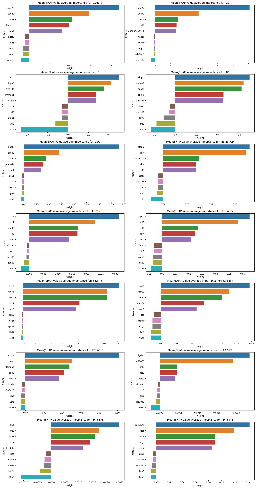

!which pip/projects/dan1/data/Brickman/conda/envs/scvi-1.0.0/bin/pipIn this notebook we have tried to modify the SHAP to accept SCVI/SCANVI object. Withing the tool, there are two option which can be used.
KernelExplainer which is agnostic to the model, only requires a prediction function and input. The problem is that it’s very slow.
Alternative approach which is recommended when dealign with NN is to use the DeepExplainer (supports both PyTorch and Tensorflow).
DeepExplainer will propage through the network and extract the weights and then will determine after penalization which features are the crucial one for classification.
!which pip/projects/dan1/data/Brickman/conda/envs/scvi-1.0.0/bin/pip%matplotlib inline
import scvi
import scgen
import pandas as pd
import numpy as np
import seaborn as sns
import matplotlib.pyplot as plt
from typing import Tuple
from numba.core.errors import NumbaDeprecationWarning, NumbaPendingDeprecationWarning
import warnings
warnings.simplefilter('ignore', category=NumbaDeprecationWarning)
warnings.simplefilter('ignore', category=NumbaPendingDeprecationWarning)
warnings.simplefilter('ignore', category=FutureWarning)
warnings.simplefilter('ignore', category=UserWarning)
scvi.settings.seed = 0/projects/dan1/data/Brickman/conda/envs/scvi-1.0.0/lib/python3.10/site-packages/scvi/_settings.py:63: UserWarning: Since v1.0.0, scvi-tools no longer uses a random seed by default. Run `scvi.settings.seed = 0` to reproduce results from previous versions.
self.seed = seed
/projects/dan1/data/Brickman/conda/envs/scvi-1.0.0/lib/python3.10/site-packages/scvi/_settings.py:70: UserWarning: Setting `dl_pin_memory_gpu_training` is deprecated in v1.0 and will be removed in v1.1. Please pass in `pin_memory` to the data loaders instead.
self.dl_pin_memory_gpu_training = (
/projects/dan1/data/Brickman/conda/envs/scvi-1.0.0/lib/python3.10/site-packages/tqdm/auto.py:21: TqdmWarning: IProgress not found. Please update jupyter and ipywidgets. See https://ipywidgets.readthedocs.io/en/stable/user_install.html
from .autonotebook import tqdm as notebook_tqdm
[rank: 0] Global seed set to 0%run ../scripts/deep_scanvi.pylvae = scvi.model.SCANVI.load("../results/02_mouse_integration/scanvi/")
lvaeINFO File ../results/02_mouse_integration/scanvi/model.pt already downloaded ScanVI Model with the following params: unlabeled_category: Unknown, n_hidden: 128, n_latent: 10, n_layers: 2, dropout_rate: 0.005, dispersion: gene, gene_likelihood: nb Training status: Trained Model's adata is minified?: False
import anndata
import torch
from sklearn.model_selection import train_test_split
def train_test_group_split(adata: anndata.AnnData, groupby: str):
"""
Function to split anndata object 80/20 per group in format
required for SCANVIDeep explainer.
"""
groups = adata.obs.groupby(groupby)
train, test = [], []
for _, cells in groups.groups.items():
train_test = train_test_split(cells.values, test_size=0.1)
train.append(train_test[0])
test.append(train_test[1])
train, test = np.concatenate(train), np.concatenate(test)
X_train = {
'X': torch.from_numpy(adata[train].layers['counts'].A).type(torch.DoubleTensor),
'batch': torch.from_numpy(adata[train].obs.batch.cat.codes.values[:, np.newaxis]),
'labels': torch.from_numpy(adata[train].obs.ct.cat.codes.values[:, np.newaxis])
}
X_test = {
'X': torch.from_numpy(adata[test].layers['counts'].A).type(torch.DoubleTensor),
'batch': torch.from_numpy(adata[test].obs.batch.cat.codes.values[:, np.newaxis]),
'labels': torch.from_numpy(adata[test].obs.ct.cat.codes.values[:, np.newaxis])
}
return X_train, X_test
def feature_plot(X_test, shap_values: np.ndarray, classes: pd.Index, features: np.ndarray, subset: bool = False):
"""
Prints feature contribution (absolute mean SHAP value) for each cell type (top 10).
X_test:
test dataset
shap_values:
SHAP values
classes:
list of classifiers (cell types in this case)
features:
list of genes (HVGs)
subset:
If True calculate contribution by subsetting for test cells which belong to that particual classifier
Else Be generic and return contributing features even when testing set has different cell types
"""
fig, ax = plt.subplots(7, 2, sharex=False, figsize=[20, 40])
for idx, ct in enumerate(classes):
shaps = pd.DataFrame(shap_values[idx], columns=features)
if subset:
shaps['ct'] = X_test['labels']
shaps = shaps.query('ct == @idx').iloc[:, :-1]
tmp_avg = shaps\
.mean(axis=0)\
.sort_values(ascending=False)\
.reset_index()\
.rename(columns={'index':'feature',0:'weight'})\
positive = tmp_avg.query('weight > 0').head(5)
negative = tmp_avg.query('weight < 0').tail(5)
avg = pd.concat([positive, negative])
title = f'Mean(SHAP value average importance for: {ct}'
else:
avg = shaps\
.abs()\
.mean(axis=0)\
.sort_values(ascending=False)\
.reset_index()\
.rename(columns={'index':'feature',0:'weight'})\
.query('weight > 0')\
.head(10)
title = f'Mean(|SHAP value|) average importance for: {ct}'
sns.barplot(x='weight', y='feature', data=avg, ax=ax[idx // 2, idx % 2])
ax[idx // 2, idx % 2].set_title(title)background, test = train_test_group_split(lvae.adata, groupby='ct')from anndata import AnnData
from tqdm import tqdm
from shap.explainers._kernel import Kernel
from shap.utils._legacy import (
IdentityLink,
convert_to_instance_with_index,
convert_to_instance,
match_instance_to_data,
)
from scipy.special import binom
import copy
import logging
import pandas as pd
import itertools
import numpy as np
log = logging.getLogger("shap")
BATCH = "batch"
class SCANVIExplainer(Kernel):
def __init__(self, model, adata: AnnData, link=IdentityLink(), **kwargs):
# self.batch = adata.obs[BATCH]
data = adata.to_df()
super().__init__(model, data, link=IdentityLink(), **kwargs)
def explain(self, incoming_instance, **kwargs):
index_hardcode = kwargs.get("index_hardcode")
# convert incoming input to a standardized iml object
instance = convert_to_instance(incoming_instance)
match_instance_to_data(instance, self.data)
# find the feature groups we will test. If a feature does not change from its
# current value then we know it doesn't impact the model
self.varyingInds = self.varying_groups(instance.x)
if self.data.groups is None:
self.varyingFeatureGroups = np.array([i for i in self.varyingInds])
self.M = self.varyingFeatureGroups.shape[0]
else:
self.varyingFeatureGroups = [self.data.groups[i] for i in self.varyingInds]
self.M = len(self.varyingFeatureGroups)
groups = self.data.groups
# convert to numpy array as it is much faster if not jagged array (all groups of same length)
if self.varyingFeatureGroups and all(
len(groups[i]) == len(groups[0]) for i in self.varyingInds
):
self.varyingFeatureGroups = np.array(self.varyingFeatureGroups)
# further performance optimization in case each group has a single value
if self.varyingFeatureGroups.shape[1] == 1:
self.varyingFeatureGroups = self.varyingFeatureGroups.flatten()
# find f(x)
if self.keep_index:
# pass_df = instance.convert_to_df()
pass_df = pd.DataFrame(instance.x, index=index_hardcode)
# pass_df.index = index_hardcode
# display(pass_df)
model_out = self.model.f(pass_df)
else:
model_out = self.model.f(instance.x)
if isinstance(model_out, (pd.DataFrame, pd.Series)):
model_out = model_out.values
self.fx = model_out[0]
if not self.vector_out:
self.fx = np.array([self.fx])
# if no features vary then no feature has an effect
if self.M == 0:
phi = np.zeros((self.data.groups_size, self.D))
phi_var = np.zeros((self.data.groups_size, self.D))
# if only one feature varies then it has all the effect
elif self.M == 1:
phi = np.zeros((self.data.groups_size, self.D))
phi_var = np.zeros((self.data.groups_size, self.D))
diff = self.link.f(self.fx) - self.link.f(self.fnull)
for d in range(self.D):
phi[self.varyingInds[0], d] = diff[d]
# if more than one feature varies then we have to do real work
else:
self.l1_reg = kwargs.get("l1_reg", "auto")
# pick a reasonable number of samples if the user didn't specify how many they wanted
self.nsamples = kwargs.get("nsamples", "auto")
if self.nsamples == "auto":
self.nsamples = 2 * self.M + 2**11
# if we have enough samples to enumerate all subsets then ignore the unneeded samples
self.max_samples = 2**30
if self.M <= 30:
self.max_samples = 2**self.M - 2
if self.nsamples > self.max_samples:
self.nsamples = self.max_samples
# reserve space for some of our computations
self.allocate()
# weight the different subset sizes
num_subset_sizes = np.int(np.ceil((self.M - 1) / 2.0))
num_paired_subset_sizes = np.int(np.floor((self.M - 1) / 2.0))
weight_vector = np.array(
[
(self.M - 1.0) / (i * (self.M - i))
for i in range(1, num_subset_sizes + 1)
]
)
weight_vector[:num_paired_subset_sizes] *= 2
weight_vector /= np.sum(weight_vector)
log.debug("weight_vector = {0}".format(weight_vector))
log.debug("num_subset_sizes = {0}".format(num_subset_sizes))
log.debug("num_paired_subset_sizes = {0}".format(num_paired_subset_sizes))
log.debug("M = {0}".format(self.M))
# fill out all the subset sizes we can completely enumerate
# given nsamples*remaining_weight_vector[subset_size]
num_full_subsets = 0
num_samples_left = self.nsamples
group_inds = np.arange(self.M, dtype="int64")
mask = np.zeros(self.M)
remaining_weight_vector = copy.copy(weight_vector)
for subset_size in range(1, num_subset_sizes + 1):
# determine how many subsets (and their complements) are of the current size
nsubsets = binom(self.M, subset_size)
if subset_size <= num_paired_subset_sizes:
nsubsets *= 2
log.debug("subset_size = {0}".format(subset_size))
log.debug("nsubsets = {0}".format(nsubsets))
log.debug(
"self.nsamples*weight_vector[subset_size-1] = {0}".format(
num_samples_left * remaining_weight_vector[subset_size - 1]
)
)
log.debug(
"self.nsamples*weight_vector[subset_size-1]/nsubsets = {0}".format(
num_samples_left
* remaining_weight_vector[subset_size - 1]
/ nsubsets
)
)
# see if we have enough samples to enumerate all subsets of this size
if (
num_samples_left
* remaining_weight_vector[subset_size - 1]
/ nsubsets
>= 1.0 - 1e-8
):
num_full_subsets += 1
num_samples_left -= nsubsets
# rescale what's left of the remaining weight vector to sum to 1
if remaining_weight_vector[subset_size - 1] < 1.0:
remaining_weight_vector /= (
1 - remaining_weight_vector[subset_size - 1]
)
# add all the samples of the current subset size
w = weight_vector[subset_size - 1] / binom(self.M, subset_size)
if subset_size <= num_paired_subset_sizes:
w /= 2.0
for inds in itertools.combinations(group_inds, subset_size):
mask[:] = 0.0
mask[np.array(inds, dtype="int64")] = 1.0
self.addsample(instance.x, mask, w)
if subset_size <= num_paired_subset_sizes:
mask[:] = np.abs(mask - 1)
self.addsample(instance.x, mask, w)
else:
break
log.info("num_full_subsets = {0}".format(num_full_subsets))
# add random samples from what is left of the subset space
nfixed_samples = self.nsamplesAdded
samples_left = self.nsamples - self.nsamplesAdded
log.debug("samples_left = {0}".format(samples_left))
if num_full_subsets != num_subset_sizes:
remaining_weight_vector = copy.copy(weight_vector)
remaining_weight_vector[
:num_paired_subset_sizes
] /= 2 # because we draw two samples each below
remaining_weight_vector = remaining_weight_vector[num_full_subsets:]
remaining_weight_vector /= np.sum(remaining_weight_vector)
log.info(
"remaining_weight_vector = {0}".format(remaining_weight_vector)
)
log.info(
"num_paired_subset_sizes = {0}".format(num_paired_subset_sizes)
)
ind_set = np.random.choice(
len(remaining_weight_vector),
4 * samples_left,
p=remaining_weight_vector,
)
ind_set_pos = 0
used_masks = {}
while samples_left > 0 and ind_set_pos < len(ind_set):
mask.fill(0.0)
ind = ind_set[
ind_set_pos
] # we call np.random.choice once to save time and then just read it here
ind_set_pos += 1
subset_size = ind + num_full_subsets + 1
mask[np.random.permutation(self.M)[:subset_size]] = 1.0
# only add the sample if we have not seen it before, otherwise just
# increment a previous sample's weight
mask_tuple = tuple(mask)
new_sample = False
if mask_tuple not in used_masks:
new_sample = True
used_masks[mask_tuple] = self.nsamplesAdded
samples_left -= 1
self.addsample(instance.x, mask, 1.0)
else:
self.kernelWeights[used_masks[mask_tuple]] += 1.0
# add the compliment sample
if samples_left > 0 and subset_size <= num_paired_subset_sizes:
mask[:] = np.abs(mask - 1)
# only add the sample if we have not seen it before, otherwise just
# increment a previous sample's weight
if new_sample:
samples_left -= 1
self.addsample(instance.x, mask, 1.0)
else:
# we know the compliment sample is the next one after the original sample, so + 1
self.kernelWeights[used_masks[mask_tuple] + 1] += 1.0
# normalize the kernel weights for the random samples to equal the weight left after
# the fixed enumerated samples have been already counted
weight_left = np.sum(weight_vector[num_full_subsets:])
log.info("weight_left = {0}".format(weight_left))
self.kernelWeights[nfixed_samples:] *= (
weight_left / self.kernelWeights[nfixed_samples:].sum()
)
# execute the model on the synthetic samples we have created
self.run()
# solve then expand the feature importance (Shapley value) vector to contain the non-varying features
phi = np.zeros((self.data.groups_size, self.D))
phi_var = np.zeros((self.data.groups_size, self.D))
for d in range(self.D):
vphi, vphi_var = self.solve(self.nsamples / self.max_samples, d)
phi[self.varyingInds, d] = vphi
phi_var[self.varyingInds, d] = vphi_var
if not self.vector_out:
phi = np.squeeze(phi, axis=1)
phi_var = np.squeeze(phi_var, axis=1)
return phi
@staticmethod
def not_equal(i, j):
return Kernel.not_equal(i, j)
def varying_groups(self, x):
return super().varying_groups(x)
def allocate(self):
super().allocate()
def addsample(self, x, m, w):
super().addsample(x, m, w)
def run(self):
super().run()
def solve(self, fraction_evaluated, dim):
return super().solve(fraction_evaluated, dim)
def shap_values(self, adata: AnnData, **kwargs):
"""Estimate the SHAP values for a set of samples.
Parameters
----------
adata : anndata.AnnData
AnnData deal with it
nsamples : "auto" or int
Number of times to re-evaluate the model when explaining each prediction. More samples
lead to lower variance estimates of the SHAP values. The "auto" setting uses
`nsamples = 2 * X.shape[1] + 2048`.
l1_reg : "num_features(int)", "auto" (default for now, but deprecated), "aic", "bic", or float
The l1 regularization to use for feature selection (the estimation procedure is based on
a debiased lasso). The auto option currently uses "aic" when less that 20% of the possible sample
space is enumerated, otherwise it uses no regularization. THE BEHAVIOR OF "auto" WILL CHANGE
in a future version to be based on num_features instead of AIC.
The "aic" and "bic" options use the AIC and BIC rules for regularization.
Using "num_features(int)" selects a fix number of top features. Passing a float directly sets the
"alpha" parameter of the sklearn.linear_model.Lasso model used for feature selection.
gc_collect : bool
Run garbage collection after each explanation round. Sometime needed for memory intensive explanations (default False).
Returns
-------
array or list
For models with a single output this returns a matrix of SHAP values
(# samples x # features). Each row sums to the difference between the model output for that
sample and the expected value of the model output (which is stored as expected_value
attribute of the explainer). For models with vector outputs this returns a list
of such matrices, one for each output.
"""
# # convert dataframes
# if str(type(X)).endswith("pandas.core.series.Series'>"):
# X = X.values
# elif str(type(X)).endswith("'pandas.core.frame.DataFrame'>"):
# if self.keep_index:
# index_value = X.index.values
# index_name = X.index.name
# column_name = list(X.columns)
# X = X.values
# x_type = str(type(X))
# arr_type = "'numpy.ndarray'>"
# # if sparse, convert to lil for performance
# if sp.sparse.issparse(X) and not sp.sparse.isspmatrix_lil(X):
# X = X.tolil()
# assert x_type.endswith(arr_type) or sp.sparse.isspmatrix_lil(X), "Unknown instance type: " + x_type
# assert len(X.shape) == 1 or len(X.shape) == 2, "Instance must have 1 or 2 dimensions!"
from scipy.sparse import issparse
X = adata.X
if issparse(X):
X = X.A
# index_value = adata.obs_names.values.tolist()
# index_value = np.arange(adata.shape[0])
# index_name = adata.obs_names.values
index_value = adata.to_df().index.values
index_name = adata.to_df().index.name
column_name = adata.var_names.tolist()
# single instance
if len(X.shape) == 1:
raise "Unsupported, fuck you!"
if X.shape[0] == 1:
data = X.reshape((1, X.shape[1]))
if self.keep_index:
data = convert_to_instance_with_index(
data, column_name, index_name, index_value
)
# Edited to pass index manually
explanation = self.explain(data, index_hardcode=index_value, **kwargs)
# # vector-output
# s = explanation.shape
# if len(s) == 2:
# outs = [np.zeros(s[0]) for j in range(s[1])]
# for j in range(s[1]):
# outs[j] = explanation[:, j]
# return outs
# # single-output
# else:
# out = np.zeros(s[0])
# out[:] = explanation
# return out
# explain the whole dataset
elif len(X.shape) == 2:
raise "Unsupported, fuck you!"
# explanations = []
# for i in tqdm(range(X.shape[0]), disable=kwargs.get("silent", False)):
# data = X[i : i + 1, :]
# if self.keep_index:
# data = convert_to_instance_with_index(
# data, column_name, index_value[i : i + 1], index_name
# )
# explanations.append(self.explain(data, **kwargs))
# if kwargs.get("gc_collect", False):
# gc.collect()
# # vector-output
# s = explanations[0].shape
# if len(s) == 2:
# outs = [np.zeros((X.shape[0], s[0])) for j in range(s[1])]
# for i in range(X.shape[0]):
# for j in range(s[1]):
# outs[j][i] = explanations[i][:, j]
# return outs
# # single-output
# else:
# out = np.zeros((X.shape[0], s[0]))
# for i in range(X.shape[0]):
# out[i] = explanations[i]
# return outdef run_predict(X):
if X.shape[0] != 1:
X_anndata = AnnData(X)
X_anndata.layers['counts'] = X
X_anndata.obs['batch'] = list(mouse_dataset_df.loc[X.index,'_Batch'])
X_anndata.obs['ct'] = np.repeat('Unknown', repeats=X_anndata.n_obs)
scvi.model.SCANVI.setup_anndata(X_anndata, labels_key = 'ct', unlabeled_category='Unknown', batch_key = 'batch')
return lvae.predict(X_anndata, soft = True)
else:
X_index = X.index
X = np.tile(X,(2,1))
X_anndata = AnnData(X)
X_anndata.layers['counts'] = X
X_anndata.obs['batch'] = list(mouse_dataset_df.loc[X_index, '_Batch']) * 2
X_anndata.obs['ct'] = np.repeat('Unknown', repeats=X_anndata.n_obs)
display(mouse_dataset_df.loc[X_index, '_Batch'])
scvi.model.SCANVI.setup_anndata(X_anndata, labels_key = 'ct', unlabeled_category='Unknown', batch_key = 'batch')
duplicate_prediction = lvae.predict(X_anndata, soft = True)
return duplicate_prediction.iloc[0:1,:]mouse_dataset = lvae.adata.copy()mouse_dataset_df = pd.DataFrame(
mouse_dataset.layers['counts'].A,
columns=mouse_dataset.var_names,
)
mouse_dataset_df.index = mouse_dataset.obs_names
mouse_dataset_df['_Batch'] = mouse_dataset.obs['batch']explainer = SCANVIExplainer(run_predict, mouse_dataset[1:10], keep_index=True)shap_values = explainer.shap_values(mouse_dataset[0, :].copy(), n_samples=2)explainer.expected_valueSCANVI requires multiple parameters which are required for SCVI. The codebase tries to propagade them in and call classifier. The logic is as follows:
import shap# data = lvae.adata_manager.create_torch_dataset().data
# X = data['X']
# rand_idx = np.random.choice(X.shape[0], 1_000, replace=False)
# X_train = {
# 'X': torch.from_numpy(X.A[rand_idx]).type(torch.DoubleTensor),
# 'batch': torch.from_numpy(data['batch'][rand_idx]),
# 'labels': torch.from_numpy(data['labels'][rand_idx]),
# }
# rand_idx = range(20,30)
# X_test = {
# 'X': torch.from_numpy(X.A[rand_idx]).type(torch.DoubleTensor),
# 'batch': torch.from_numpy(data['batch'][rand_idx]),
# 'labels': torch.from_numpy(data['labels'][rand_idx]),
# }# integrate, to get Z for classification (n_latent)
# e = PyTorchDeep(lvae.module, lvae.module(X_train)[0]['z'])
e = SCANVIDeep(lvae.module, background)# shap_values = e.shap_values(lvae.module(X_test)[0]['z'])
shap_values = e.shap_values(test)100%|██████████████████████████████████████████████████████████████████████████████████████████████████████████████████████████████████████████████████████████████████████████████████████████████████████████████████████████| 14/14 [07:36<00:00, 32.58s/it]shap.summary_plot(
shap_values,
test['X'],
feature_names=lvae.adata.var_names,
class_names=lvae.adata.obs.ct.cat.categories
)feature_plot(test, shap_values, classes=lvae.adata.obs.ct.cat.categories, features=lvae.adata.var_names, subset=True)
feature_plot(test, shap_values, classes=lvae.adata.obs.ct.cat.categories, features=lvae.adata.var_names, subset=False)